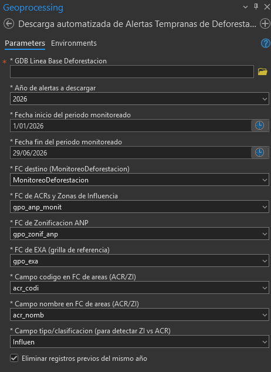
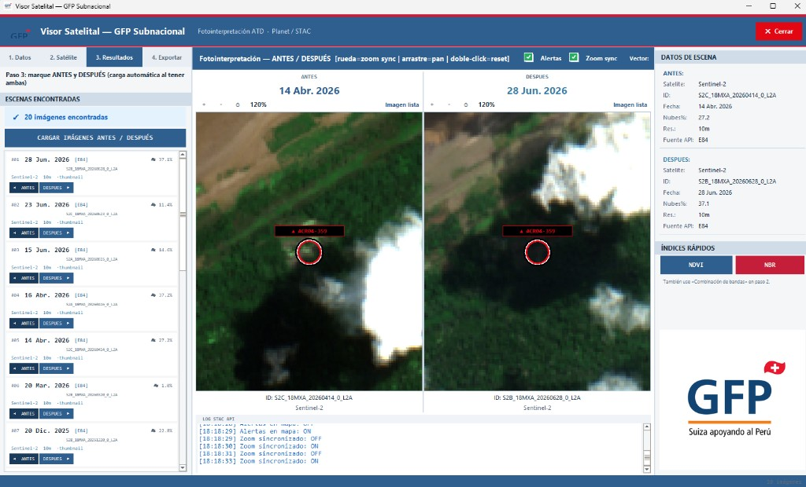
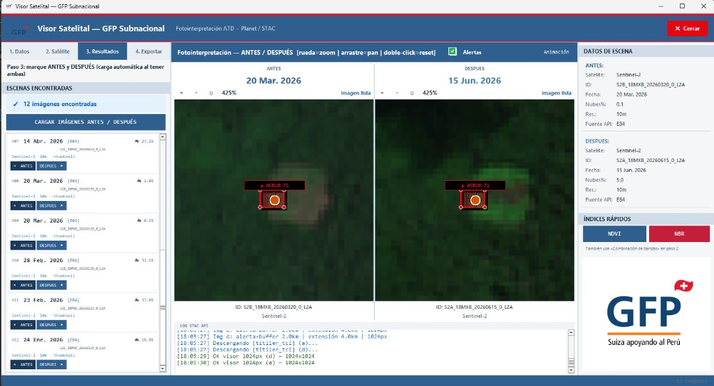
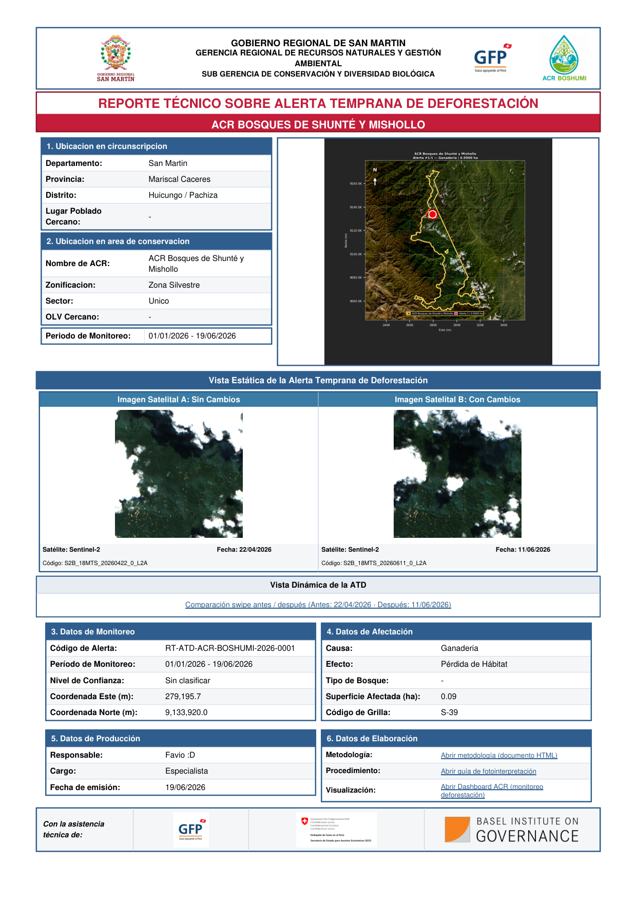

San Martín · Loreto · Cusco — mismo flujo en las tres regiones
Para personal de ACR · No necesita ser programador
Está pensado para el personal de cada Área de Conservación Regional (ACR) y equipos de monitoreo que necesitan:
Descarga las alertas y las guarda en la base de datos de su región.
Compara imágenes ANTES y DESPUÉS y clasifica la alerta.
Genera el informe técnico institucional listo para entregar.
Alertas (H1) → Fotointerpretación (H2) → Informe PDF (H3)
En ArcGIS Pro abra la herramienta Descarga automatizada de Alertas Tempranas de Deforestación. Elija la GDB de su región, el año y el periodo. El resto de capas suele venir ya configurado.

Figura 1. Herramienta H1 en ArcGIS Pro (parámetros). Igual en las tres regiones.
MonitoreoDeforestacionEl visor GFP permite marcar una escena ANTES y otra DESPUÉS. Al tener ambas, carga la comparación automáticamente. Sirve para decidir si la alerta es antrópica, natural o falsa alerta.

Figura 2. Visor H2 — comparación ANTES / DESPUÉS con la alerta marcada en rojo.

Figura 3. Mismo visor con zoom sincronizado para revisar el cambio con detalle.
El resultado final es el Reporte Técnico sobre Alerta Temprana de Deforestación: ubicación, mapa, imágenes satelitales, datos de afectación y logos institucionales.

Figura 4. Ejemplo de reporte PDF institucional (salida de H3). Mismo formato en las tres regiones; cambian logos y datos de la ACR.
pdfs/ de su regiónpdfs/ son resultados de trabajo y
no se suben a GitHub. En el repositorio solo hay un PDF de ejemplo por región (en docs/).
| Región | ACR | Carpeta | Guía regional |
|---|---|---|---|
| Loreto | Ampiyacu, Tamshiyacu Tahuayo, Maijuna Kichwa, Alto Nanay | regiones/ATD_Loreto/ |
Abrir guía |
| San Martín | Cordillera Escalera (CE), BOSHUMI | regiones/ATD_San_Martin/ |
Abrir guía |
| Cusco | Choquequirao, Chuyapi Urusayhua, Q'eros Kosnipata | regiones/ATD_Cuzco/ |
Abrir guía |
El sistema completo (San Martín, Loreto y Cusco) ocupa aproximadamente 180 MB. Si solo trabaja en una región, puede quedarse únicamente con esa carpeta.
| Región | Carpeta | Tamaño aproximado |
|---|---|---|
| Loreto | regiones/ATD_Loreto/ | ~45 MB |
| San Martín | regiones/ATD_San_Martin/ | ~65 MB |
| Cusco | regiones/ATD_Cuzco/ | ~67 MB |
| Carpeta | ¿Se sube? | Para qué |
|---|---|---|
toolbox/ | Sí | Herramientas H1, H2, H3 |
GDB/ | Sí | Datos base de la región |
logos/ | Sí | Logos del PDF |
guia/ y docs/ | Sí | Guías y un PDF de ejemplo |
pdfs/ | No | Reportes que usted genere (resultados) |
imagenes_sentinel/ | No | Imágenes exportadas del visor |
mapas/ · documentacion_atd/ | No | Salidas temporales de trabajo |